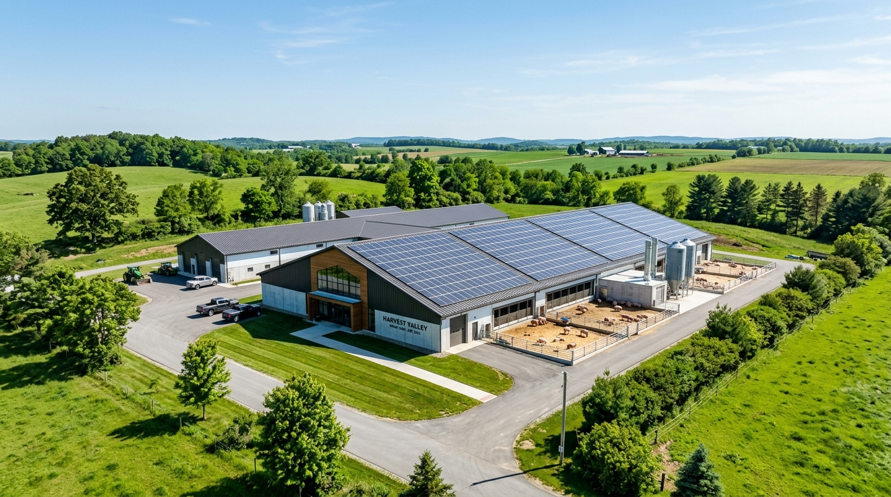

Garantizamos animales de alta genética, salud comprobada y sostenibilidad integral para responder a las máximas exigencias del mercado colombiano.
Nuestras instalaciones cuentan con monitoreo veterinario continuo y protocolos estrictos de manejo sanitario.
Comprometidos con la excelencia, la sostenibilidad y la genética porcina de alto rendimiento.
Somos una empresa dedicada a la producción y comercialización de porcinos de alta calidad, comprometida con la innovación, el bienestar animal y la sostenibilidad de nuestros procesos.
Trabajamos bajo estrictos estándares de bioseguridad y manejo responsable, garantizando productos confiables que cumplen con las exigencias del mercado y generan valor para nuestros clientes.

Ofrecemos garantía y respaldo en cada etapa del proceso productivo.
Selección rigurosa de reproductores Landrace, Duroc y Pietrain para asegurar máxima conversión alimenticia y conformación muscular.
Formulaciones nutricionales especializadas por etapa de desarrollo para potenciar el crecimiento saludable y la calidad de carne.
Ambientes limpios, amplios y bien ventilados que promueven el confort constante y reducen el estrés animal.
Logística y transporte adaptados a normativas sanitarias para garantizar entregas puntuales y animales en óptimo estado.